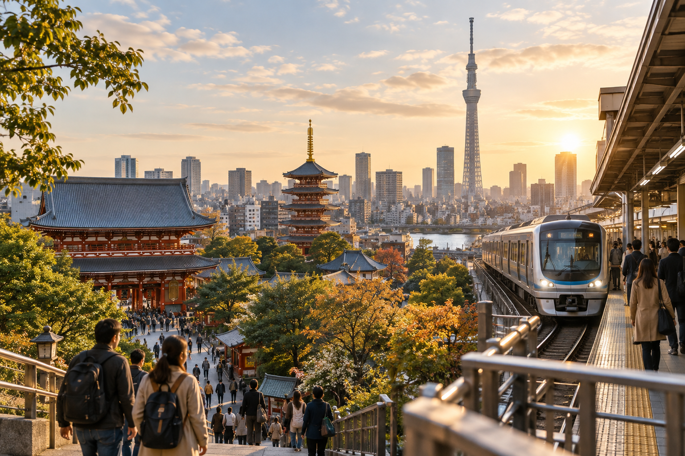
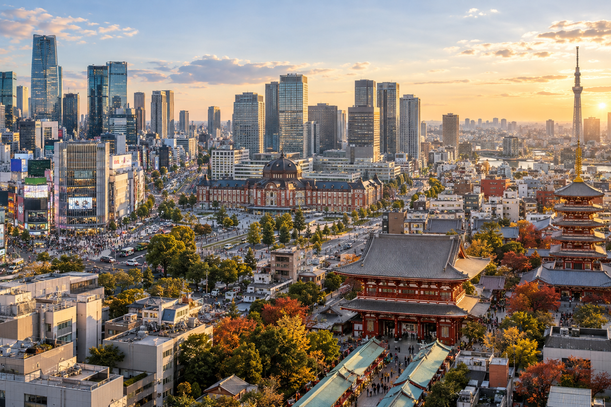
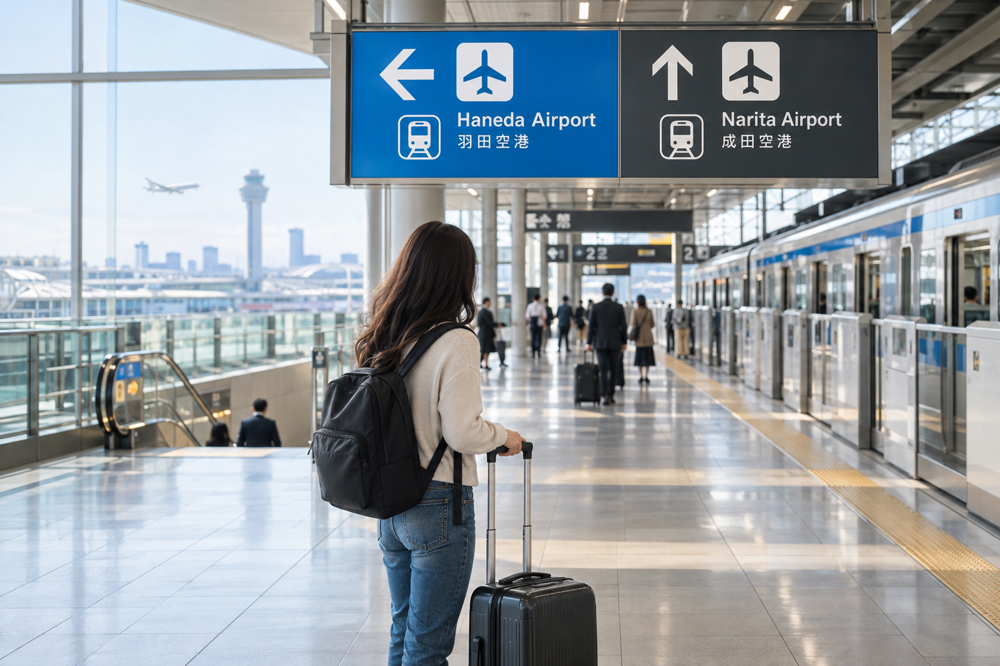

Tokyo Travel Guide for First-Time Visitors
Tokyo can feel difficult to plan before your first visit because there is no single center where everything happens. Famous temples, modern shopping districts, observation decks, food streets, museums, parks, nightlife, and quiet residential neighborhoods are spread across different parts of the city. Trying to see all of them usually creates a trip with too much train time and too little time enjoying Tokyo itself.
A better first trip starts by treating Tokyo as a collection of neighborhoods. Choose a few areas that match your interests, group nearby places together, and leave room for food, walking, shopping, and unexpected stops. You do not need to see every famous attraction for your first Tokyo visit to feel complete.
This Tokyo travel guide explains the main planning decisions first-time visitors need to make, including how many days to stay, which parts of Tokyo to prioritize, how to organize your sightseeing, when to visit, airport choices, food, money, and common planning mistakes. Detailed itineraries, hotel-area comparisons, local transportation instructions, and day trips are covered separately so you can use this page as your starting point.
Is Tokyo Good for First-Time Visitors to Japan?

Yes.
Tokyo is one of the easiest places to begin a first Japan trip because it combines major attractions with strong public transportation, a wide range of accommodation, plenty of food choices, and good connections to other parts of the country.
The city can look confusing on a map, but most visitors quickly learn that they do not need to understand the entire rail network.
You mainly need to know:
- ✓Which neighborhood you are visiting
- ✓Which station is closest
- ✓Which line gets you there
- ✓Which station exit you need
- ✓Which nearby sights can be grouped together
Multilingual signs are common across the main transport network, and rechargeable IC cards make everyday train and subway payments easier.
The challenge in Tokyo is usually not getting around.
It is deciding what deserves your limited time.
Tokyo First-Trip Planning at a Glance
For a typical first visit, I would plan Tokyo around these principles:
| Planning Question | Good Starting Point |
|---|---|
| How long to stay | 3–5 full days for many first-time visitors |
| Best trip style | Group sightseeing by neighborhood |
| Main transport | Trains and subways |
| Transport payment | IC card for most everyday rides |
| Best airport for convenience | Haneda when flights are otherwise similar |
| Large luggage | Pack light or use luggage forwarding when useful |
| Accommodation priority | Easy station access |
| Day trips | Add only if you have enough Tokyo time |
| Daily sightseeing | 1–2 main neighborhood clusters |
| Biggest mistake | Trying to cross the city repeatedly in one day |
This is a starting framework, not a fixed itinerary.
Tokyo works best when you adjust it around your own interests.
How Many Days Do You Need in Tokyo?
For a first visit, three to five full days works well for many travelers.
Three days can cover the essential Tokyo experience if you plan carefully.
Five days gives you more room to slow down, explore neighborhoods beyond the headline attractions, spend longer shopping or eating, and recover from jet lag without feeling that every hour has to be scheduled.
3 Days in Tokyo
Three days suits travelers who are also giving significant time to:
- ✓Kyoto
- ✓Osaka
- ✓Hiroshima
- ✓Other parts of Japan
You will need to prioritize.
Think in terms of major neighborhood groups rather than individual attractions spread across the city.
Our Tokyo 3-Day Itinerary for First-Time Visitors will provide the exact route for this trip length.
5 Days in Tokyo
Five days is better if Tokyo is one of the main reasons for your Japan trip.
You can see the major districts while leaving more time for:
- ✓Food
- ✓Shopping
- ✓Museums
- ✓Parks
- ✓Smaller neighborhoods
- ✓Evening activities
- ✓A slower daily pace
Our Tokyo 5-Day Itinerary for First-Time Visitors covers that deeper city plan separately.
More Than 5 Days
You will not run out of things to do.
Extra days can be used for:
- ✓More specialized neighborhoods
- ✓Museums
- ✓Theme parks
- ✓Shopping
- ✓Seasonal attractions
- ✓Food-focused exploration
- ✓A trip outside Tokyo
But you do not need a week in Tokyo to have a strong first visit if the rest of your Japan itinerary also includes Kyoto, Osaka, and other destinations.
Do Not Count Arrival Day as a Full Tokyo Day
International arrival days are unpredictable.
Your flight may land on time, but you still need to account for:
- ✓Immigration
- ✓Baggage collection
- ✓Customs
- ✓Airport transport
- ✓Hotel check-in
- ✓Jet lag
If you land in the afternoon, I would treat that day as a bonus evening, not one of your main sightseeing days.
Plan something easy near your hotel.
For example:
- ✓Walk around the neighborhood
- ✓Eat dinner nearby
- ✓Visit a convenience store
- ✓Pick up anything you need
- ✓Sleep early if necessary
Do not schedule a major attraction that requires a timed reservation shortly after an international arrival.
Understand Tokyo as Neighborhood Clusters

One of the biggest improvements you can make to a Tokyo plan is to stop thinking of attractions as an isolated checklist.
Tokyo is better planned by area.
A first-time visitor will often spend time across several broad clusters.
Western Tokyo: Shibuya, Harajuku and Shinjuku
This side of Tokyo gives many visitors the modern city experience they imagined before arriving.
Shibuya
Known for:
- ✓Shibuya Crossing
- ✓Shopping
- ✓Restaurants
- ✓Youth culture
- ✓City views
- ✓Busy evening atmosphere
Shibuya works well as part of a larger west-Tokyo sightseeing day rather than as one isolated stop.
Harajuku and Meiji Jingu Area
Nearby, you can combine:
- ✓Meiji Jingu
- ✓Green walking areas
- ✓Harajuku
- ✓Fashion streets
- ✓Cafes
- ✓Shopping
The contrast between the shrine surroundings and nearby commercial streets is one reason this area works well on a first trip.
Shinjuku
Shinjuku combines:
- ✓Major rail connections
- ✓Shopping
- ✓Restaurants
- ✓Nightlife
- ✓Skyscrapers
- ✓Observation opportunities
- ✓Busy entertainment streets
It can work particularly well later in the day because many parts of the district remain active after traditional attractions elsewhere have closed.
You do not need to visit Shibuya, Harajuku, and Shinjuku as three completely separate days.
Their relative location makes them easier to organize together or across nearby periods.
Eastern Tokyo: Asakusa and Ueno
Eastern Tokyo gives a different first impression.
Instead of large modern commercial districts, you can focus more on:
- ✓Temples
- ✓Traditional streets
- ✓Markets
- ✓Museums
- ✓Parks
- ✓Older Tokyo atmosphere
Asakusa
Asakusa is one of the most useful areas for a first-time visitor interested in traditional Tokyo.
Sensoji and the surrounding streets create a very different experience from Shibuya or Shinjuku.
I would allow enough time to walk rather than visiting the temple and immediately leaving.
Nearby streets, shops, snacks, and views are part of the experience.
Ueno
Ueno is useful for travelers interested in:
- ✓Museums
- ✓Parks
- ✓Markets
- ✓Cultural attractions
It can pair naturally with other eastern Tokyo areas depending on your interests.
Again, the goal is to reduce unnecessary travel across the city.
Central Tokyo: Tokyo Station, Marunouchi and Ginza
Central Tokyo works well for a mix of:
- ✓Architecture
- ✓Shopping
- ✓Restaurants
- ✓Business districts
- ✓Transport connections
- ✓Imperial Palace surroundings
Tokyo Station and Marunouchi
Tokyo Station is much more than a place to catch a train.
The surrounding Marunouchi area offers a polished central-Tokyo atmosphere and easy access to several nearby areas.
It is also an important transport point for travelers continuing elsewhere in Japan.
Ginza
Ginza suits visitors interested in:
- ✓Department stores
- ✓Shopping
- ✓Dining
- ✓Modern architecture
- ✓A more polished commercial atmosphere
It feels different from Shibuya even though both are major shopping areas.
This is why choosing neighborhoods by personal interest matters more than trying to visit every famous district.
Other Tokyo Areas Worth Considering
You can easily fill a first trip using only the major neighborhoods above, but several other areas may fit particular interests.
Akihabara
Best known for interests connected with:
- ✓Anime
- ✓Manga
- ✓Games
- ✓Electronics
- ✓Collectibles
It is worth prioritizing if those interests matter to you.
If they do not, you should not add Akihabara simply because it appears on every generic Tokyo checklist.
Odaiba and Tokyo Bay
The Tokyo Bay side offers a more open, modern environment with:
- ✓Waterfront areas
- ✓Entertainment
- ✓Shopping
- ✓Large attractions
It usually needs more deliberate planning because it does not fit every first-time route naturally.
Roppongi
Roppongi may appeal to travelers interested in:
- ✓Art
- ✓Modern architecture
- ✓Nightlife
- ✓City views
It can be valuable, but it does not need to be mandatory on every first visit.
Build Your Tokyo Plan Around Interests, Not Rankings
A common first-time mistake is copying a list titled “20 things you must do in Tokyo” and trying to complete it.
That usually produces a rushed trip.
Instead, decide what you actually care about.
If You Like Traditional Culture
Give more time to:
- ✓Asakusa
- ✓Shrines and temples
- ✓Gardens
- ✓Museums
- ✓Older shopping streets
If You Like Modern Tokyo
Prioritize areas such as:
- ✓Shibuya
- ✓Shinjuku
- ✓Ginza
- ✓Tokyo Bay
If You Like Anime and Games
Include places such as:
- ✓Akihabara
- ✓Ikebukuro
- ✓Other specialist shopping areas
If Food Is Your Priority
Leave open time around several neighborhoods instead of making every meal a cross-city reservation.
Tokyo has good food at many price levels, so you do not need to spend half the day traveling to one restaurant.
If Shopping Is Important
Plan shopping later in the day when possible.
This lets you sightsee earlier and reduces the amount of time you carry purchases around.
How Many Areas Should You Visit in One Day?
For a first trip, one or two main neighborhood clusters per day is often enough.
Three can work when the locations connect naturally.
The problem starts when your plan looks like:
Asakusa → Shibuya → Ueno → Shinjuku → Ginza
in one day.
Technically, Tokyo's trains may make this possible.
That does not make it a good sightseeing plan.
You will spend too much time:
- ✓Finding stations
- ✓Changing lines
- ✓Finding exits
- ✓Walking between platforms
- ✓Reorienting yourself in each district
A better day might focus on:
Asakusa + Ueno
or:
Meiji Jingu + Harajuku + Shibuya
The exact daily routes belong in our Tokyo itinerary pages, but the principle should guide every Tokyo plan.
Leave Unscheduled Time
Tokyo rewards unplanned walking.
You may find:
- ✓A small shrine
- ✓An interesting side street
- ✓A bakery
- ✓A stationery shop
- ✓A department-store food hall
- ✓A neighborhood restaurant
- ✓A seasonal event
that was never on your list.
If every 30 minutes is booked, you lose that flexibility.
I would choose a few priorities for each day and treat everything else as optional.
Best Time to Visit Tokyo
Tokyo can be visited throughout the year.
The experience changes by season.
Spring
Spring is popular because of comfortable periods of weather and cherry blossoms.
The trade-off is demand.
Popular blossom areas, hotels, and attractions can become busy during peak periods.
Summer
Summer can be hot and humid.
You need to plan around:
- ✓Heat
- ✓Hydration
- ✓Indoor breaks
- ✓Rain
- ✓Seasonal weather
There are also festivals and summer events that can make the season appealing.
Autumn
Autumn can offer comfortable sightseeing weather and seasonal colors later in the year.
It is another strong period for travelers who expect to do a lot of walking.
Winter
Winter can mean:
- ✓Cooler temperatures
- ✓Clear days
- ✓Seasonal illuminations
- ✓Less heat while walking
It can work very well for city travel if you pack properly.
For detailed seasonal comparisons, weather, crowds, and timing across the whole country, use Best Time to Visit Japan: Weather, Crowds and Costs rather than turning this Tokyo guide into another seasonal-planning article.
Which Airport Should You Use for Tokyo?

Tokyo is served by:
- ✓Haneda Airport (HND)
- ✓Narita International Airport (NRT)
For most travelers staying in central Tokyo, Haneda is more convenient if the flight price and schedule are otherwise similar.
Narita is farther away but may offer:
- ✓A better fare
- ✓A direct flight
- ✓A better airline
- ✓A better schedule
The airport should therefore be chosen based on your complete flight and hotel plan, not distance alone.
Our Narita vs Haneda Airport: Which Tokyo Airport Is Better? guide covers that decision in detail.
Choose Your Tokyo Hotel for Location Before Luxury
For a first-time visitor, hotel location can affect the trip every day.
A beautiful hotel becomes less attractive if every morning starts with:
- ✓A long walk
- ✓A bus
- ✓A train transfer
- ✓Then another train
You do not necessarily need to stay beside Tokyo Station or Shinjuku Station.
You do need convenient access to useful transport.
When comparing hotels, check:
- ✓Walking time to the station
- ✓Which lines serve that station
- ✓Whether the route fits your sightseeing
- ✓Airport access
- ✓Evening food options nearby
The detailed neighborhood decision belongs in Where to Stay in Tokyo: Best Areas for First-Time Visitors.
For this broad guide, the important rule is simple:
A convenient station is usually more valuable than being close to one individual attraction.
How to Get Around Tokyo Without Overcomplicating It
Tokyo's transport system looks complex because many rail and subway lines appear on the same map.
You do not need to memorize them.
For most sightseeing days, you will mainly use a mix of:
- ✓JR trains
- ✓Tokyo Metro
- ✓Toei Subway
- ✓Private railway lines
- ✓Walking
The best approach is to plan each journey individually using a reliable route-planning app.
You only need to understand:
- ✓Your starting station
- ✓Your destination station
- ✓The correct line
- ✓Direction of travel
- ✓Transfer station if needed
- ✓Exit number at your destination
The detailed system, including JR vs subway, IC cards, rush hour, passes, station exits, and transfers, belongs in How to Get Around Tokyo: Subway, Trains and Transport.
For this Tokyo guide, the important point is simple:
Tokyo transport is easier to use than it looks on the map.
Use an IC Card for Everyday Travel
A rechargeable IC card makes most local transport easier.
Major compatible cards such as:
- ✓Suica
- ✓PASMO
- ✓ICOCA
can be used across many trains, subways, buses, and shops.
Instead of buying a paper ticket before every local ride, you usually tap when entering and tap when leaving.
The correct fare is deducted automatically.
If you already picked up a compatible IC card elsewhere in Japan, you generally do not need another one just because you reached Tokyo.
Our IC Cards in Japan: Suica, PASMO and ICOCA Explained guide covers purchase, recharge, tourist cards, mobile options, and limits in detail.
Walking Is a Major Part of Tokyo Travel
Tokyo has excellent trains, but first-time visitors often underestimate how much walking is involved.
A normal sightseeing day may include:
- ✓Walking to the station
- ✓Long station corridors
- ✓Platform transfers
- ✓Walking from the station exit
- ✓Exploring neighborhoods
- ✓Shopping streets
- ✓Parks
- ✓Temples
- ✓Museums
It is easy to reach a high step count even if you use trains throughout the day.
Comfortable shoes matter more than fashionable travel shoes that hurt after two hours.
Do Not Automatically Take a Train for Every Short Distance
Some nearby neighborhoods are better connected on foot than they appear on a rail map.
A short walk can sometimes be easier than:
- ✓Entering a station
- ✓Waiting for a train
- ✓Traveling one stop
- ✓Finding the correct exit
Check walking time before boarding.
Tokyo becomes more enjoyable when transport supports your sightseeing instead of controlling it.
Avoid Building Your Day Around Rush Hour
Tokyo's busiest commuter periods can make popular train lines uncomfortable.
If possible, avoid planning unnecessary long cross-city journeys during the main morning commute.
Instead:
- ✓Start with something near your hotel
- ✓Walk to a nearby attraction
- ✓Have breakfast first
- ✓Travel slightly later
You do not need to build your entire trip around rush hour, but avoiding the busiest periods can make your first few days easier.
Station Exits Matter More Than First-Time Visitors Expect
Large stations can have many exits.
Choosing the wrong one can leave you several streets away from your destination.
Before leaving the train, check:
- ✓Exit number
- ✓Landmark near the exit
- ✓Hotel or attraction direction
This is particularly useful at large stations and busy commercial areas.
Do not treat arriving at the correct station as the end of the navigation.
Is Tokyo Expensive?
Tokyo can be expensive, but it does not have to be a luxury destination.
Your largest costs will usually be:
- ✓Accommodation
- ✓International flights
- ✓Long-distance transport
- ✓Major paid attractions
Everyday local transport and food can be more flexible.
You can spend heavily on:
- ✓Luxury hotels
- ✓Fine dining
- ✓Rooftop bars
- ✓Shopping
- ✓Premium attractions
or keep the trip more moderate with:
- ✓Business hotels
- ✓Casual restaurants
- ✓Convenience-store breakfasts
- ✓Local train travel
- ✓Free neighborhoods and parks
The full Japan budget belongs in Japan Trip Cost: Budget for 7, 10 and 14 Days.
For Tokyo specifically, I would focus less on finding the absolute cheapest option and more on getting good value.
A slightly more expensive hotel beside a useful station may save time and transport effort every day.
Tokyo Has Good Food at Many Price Levels
You do not need a large food budget to eat well in Tokyo.
Common first-trip options include:
- ✓Ramen
- ✓Sushi
- ✓Soba
- ✓Udon
- ✓Curry
- ✓Yakitori
- ✓Tonkatsu
- ✓Tempura
- ✓Donburi
- ✓Convenience-store food
- ✓Department-store food halls
Some of the city's most expensive restaurants require advance reservations.
Many excellent everyday meals do not.
Do You Need Restaurant Reservations?
Not for every meal.
I would reserve only restaurants that are genuinely important to your trip.
This may include:
- ✓Famous restaurants
- ✓Fine dining
- ✓Small popular restaurants
- ✓Special occasion meals
- ✓Restaurants with limited seating
For normal lunches and dinners, leaving some flexibility often works better.
You may discover a good restaurant near wherever you happen to be.
Do Not Spend Too Much Time Chasing Viral Restaurants
A restaurant seen repeatedly on social media may require:
- ✓A long queue
- ✓A reservation
- ✓Cross-city travel
- ✓Significant waiting time
Ask whether the meal itself matters enough to justify that time.
Tokyo has an enormous number of restaurants.
A first-time trip should not become a schedule built around queues.
Convenience Stores Are Useful, Not Just Cheap
Convenience stores are useful for:
- ✓Water
- ✓Snacks
- ✓Breakfast
- ✓Coffee
- ✓Simple meals
- ✓Toiletries
- ✓ATMs
- ✓Small travel items
They are especially helpful on:
- ✓Arrival night
- ✓Early mornings
- ✓Late evenings
- ✓Travel days
I would use them as part of the trip, but not replace every meal with convenience-store food.
Tokyo has too much food variety for that.
Department Store Food Halls Are Worth Knowing About
Large department stores often have extensive basement food halls.
You may find:
- ✓Prepared meals
- ✓Sushi
- ✓Desserts
- ✓Bakery items
- ✓Fruit
- ✓Gifts
- ✓Regional specialties
These can be useful when you want high-quality food without committing to a restaurant.
They can also work well before returning to your hotel in the evening.
Tokyo Breakfast Can Be Different From What You Expect
Do not assume every hotel area has large Western-style breakfast cafes opening very early.
Depending on your neighborhood, breakfast may come from:
- ✓Hotel breakfast
- ✓Cafe
- ✓Bakery
- ✓Convenience store
- ✓Fast casual restaurant
Check your morning options if breakfast is important to you.
This is especially useful before early sightseeing.
How Much Cash Do You Need in Tokyo?
Tokyo is increasingly cashless, but I would still carry some yen.
You may need cash for:
- ✓Smaller restaurants
- ✓Some ticket machines
- ✓Shrines or temples
- ✓Small local shops
- ✓Certain vending or payment situations
- ✓Physical IC-card recharge
You do not need to carry your entire trip budget in cash.
Use a combination of:
- ✓Credit or debit card
- ✓IC card
- ✓Cash
That gives you a backup if one method is not accepted.
ATMs Are Easy to Find in Major Areas
International visitors can commonly find usable ATMs at:
- ✓Convenience stores
- ✓Airports
- ✓Major stations
- ✓Some banks
Do not wait until you have almost no cash left.
Withdraw before heading into a smaller area where options may be limited.
Should You Exchange All Your Money Before Japan?
Usually no.
You can arrive with some yen and access more money during the trip.
The best method depends on:
- ✓Your home bank
- ✓Foreign transaction fees
- ✓ATM fees
- ✓Exchange rates
- ✓Card availability
The main goal is to avoid depending on only one payment method.
Internet Access Makes Tokyo Much Easier
Reliable mobile data helps with:
- ✓Train routes
- ✓Maps
- ✓Translation
- ✓Restaurant searches
- ✓Hotel directions
- ✓Attraction bookings
- ✓Messaging
For a first trip, I would consider mobile data an essential planning tool rather than an optional extra.
Common options include:
- ✓eSIM
- ✓Physical SIM
- ✓Pocket Wi-Fi
- ✓International roaming
Choose before departure rather than waiting until you are lost outside a station.
Download Important Information Before Leaving the Hotel
Even with reliable data, save important details offline.
Keep:
- ✓Hotel address
- ✓Hotel name in English
- ✓Booking confirmation
- ✓Airport details
- ✓Important train reservations
- ✓Passport copy
- ✓Emergency contact information
A screenshot can be useful when your phone signal is weak or an app will not load.
Translation Apps Are Helpful but You Do Not Need Japanese Fluency
Many first-time visitors worry about the language barrier.
You can travel around Tokyo without speaking Japanese fluently.
Main tourist areas often have:
- ✓English station signs
- ✓English ticket-machine menus
- ✓Multilingual information
- ✓Visual signs
- ✓Staff accustomed to international travelers
A translation app can help with:
- ✓Menus
- ✓Smaller shops
- ✓Questions
- ✓Product labels
- ✓More detailed conversations
Learning a few simple Japanese phrases is useful and polite, but you do not need to delay a Japan trip because you cannot speak the language.
Tokyo Etiquette for First-Time Visitors
You do not need to memorize a long list of rules.
A few habits cover most everyday situations.
Keep Your Voice Low on Trains
Public transport is generally quieter than in many other large cities.
Avoid:
- ✓Loud phone calls
- ✓Speakerphone
- ✓Loud group conversations
Follow the atmosphere around you.
Queue Where Marked
Train platforms and busy attractions often have clear queue markings.
Stand in the indicated line rather than forming your own queue.
Let Passengers Leave First
Wait for people to exit before entering a train or elevator.
This keeps crowded stations moving.
Do Not Block Busy Walkways
If you need to stop and check your phone, move to the side.
This is especially useful inside stations.
Follow Local Food Rules
Eating while walking is not treated the same way everywhere.
At food markets and street-food areas, use the designated space or follow what the vendor expects.
Respect Temples and Shrines
These are religious places, not just sightseeing attractions.
Follow posted rules for:
- ✓Photography
- ✓Entry
- ✓Quiet areas
- ✓Restricted spaces
You do not need to copy every action you see if you do not understand its meaning.
Respectful behavior is enough.
Is Tokyo Safe for First-Time Visitors?
Tokyo is generally considered a relatively safe major city for visitors.
That does not mean you should stop using normal travel judgment.
Keep an eye on:
- ✓Passport
- ✓Wallet
- ✓Phone
- ✓Bags
- ✓Drinks
- ✓Late-night transport
Busy nightlife districts deserve the same caution you would use in any large city.
Avoid following aggressive street promoters into unfamiliar bars or clubs.
Keep Your Passport Secure
Foreign visitors should keep the required identification with them and protect it carefully.
Use:
- ✓Secure pocket
- ✓Money belt if preferred
- ✓Zipped inner compartment
- ✓Small travel bag
Do not leave important documents loose in an open backpack.
Tokyo Is Very Clean, but Public Trash Bins Can Be Limited
You may notice fewer public bins than expected.
Keep a small bag with you for:
- ✓Wrappers
- ✓Tissues
- ✓Small rubbish
until you find an appropriate bin.
Do not leave rubbish beside a full bin or on the street.
Public Toilets Are Generally Easy to Find
Useful locations include:
- ✓Stations
- ✓Shopping centers
- ✓Department stores
- ✓Parks
- ✓Major attractions
This can make full sightseeing days easier.
Still, take advantage of facilities when you see them rather than waiting until it becomes urgent.
Weather Should Affect Your Daily Plan
Even when Tokyo is only one part of a larger Japan trip, check the local forecast each morning.
A rainy day might be better for:
- ✓Museums
- ✓Shopping
- ✓Indoor observation areas
- ✓Department stores
A clear day may be better for:
- ✓Parks
- ✓Outdoor neighborhoods
- ✓City views
- ✓Long walking routes
Do not keep a rigid five-day schedule if moving two days around gives you better weather.
Summer Requires a Slower Pace
Tokyo summers can be hot and humid.
If you travel during hotter months:
- ✓Start earlier
- ✓Carry water
- ✓Take indoor breaks
- ✓Wear suitable clothing
- ✓Avoid stacking too many outdoor attractions together
A route that feels easy in spring can become tiring in summer.
Rain Does Not Have to Ruin a Tokyo Day
Tokyo has many indoor options.
On a rainy day, you can still use:
- ✓Museums
- ✓Shopping centers
- ✓Department stores
- ✓Indoor entertainment
- ✓Cafes
- ✓Covered station complexes
Keep one or two indoor alternatives in your plan rather than assuming every day will have perfect weather.
Book Only the Attractions That Actually Need It
Some Tokyo attractions and experiences use:
- ✓Timed entry
- ✓Advance reservations
- ✓Limited daily tickets
For these, booking ahead is sensible.
But do not reserve every hour.
A first trip becomes difficult if one delay causes the entire day to collapse.
I prefer:
One important timed booking + flexible surrounding sightseeing
instead of:
Five fixed reservations across different neighborhoods.
Put Timed Attractions in the Right Neighborhood Day
If you book something in Shibuya, plan other nearby activities around it.
Do not schedule:
10:00 Asakusa
then
12:00 Shibuya reservation
then
2:00 Ueno
Tokyo's transport can make this technically possible, but the day will feel rushed.
Your reservations should support your neighborhood plan.
Make a Priority List Before You Arrive
Separate your Tokyo attractions into three groups.
Must Do
Things you would be genuinely disappointed to miss.
Would Like to Do
Activities you will visit if time and energy allow.
Optional
Good ideas that can be dropped without affecting the trip.
This is one of the easiest ways to prevent overplanning.
Plan Evenings Separately From Daytime Sightseeing
Tokyo does not stop when temples and museums close.
Evenings can be used for:
- ✓Shibuya
- ✓Shinjuku
- ✓Night views
- ✓Restaurants
- ✓Shopping
- ✓Entertainment
- ✓Neighborhood walks
This means you do not need to fit everything into 9 AM–5 PM.
A well-planned evening can take pressure off the daytime schedule.
Give Yourself a Jet-Lag Buffer
Your body may not follow your itinerary.
You may:
- ✓Wake very early
- ✓Become tired in the afternoon
- ✓Lose appetite
- ✓Need an earlier night
This is normal after long-distance travel.
Avoid putting your most important day immediately after a late international arrival.
If possible, make the first full Tokyo day relatively flexible.
Should You Take a Day Trip From Tokyo?
Tokyo has enough to fill many days, so a day trip should not automatically be part of every first visit.
For a short Tokyo stay, I would prioritize the city itself.
If you only have three full days, leaving Tokyo for an entire day can mean missing a large part of the city.
With five or more days, a day trip becomes easier to justify.
Popular possibilities outside Tokyo include destinations known for:
- ✓Temples and historic streets
- ✓Coastal scenery
- ✓Mountain views
- ✓Hot springs
- ✓Nature
- ✓Traditional towns
The right choice depends on your interests, season, weather, and how much Tokyo time you have.
Our Best Day Trips From Tokyo for First-Time Visitors will compare the strongest options separately.
For this guide, use one rule:
Do not add a day trip until you have protected enough time for Tokyo itself.
Keep Your Tokyo Days Flexible
A good Tokyo plan has structure without becoming rigid.
I would decide:
- ✓Which neighborhood cluster to visit
- ✓One or two priority attractions
- ✓Any timed reservation
- ✓A general evening area
Then leave the rest flexible.
This allows you to adjust for:
- ✓Weather
- ✓Energy
- ✓Crowds
- ✓Shopping
- ✓Food
- ✓Jet lag
- ✓Unexpected discoveries
You are planning a city experience, not trying to complete a checklist as fast as possible.
Tokyo Trip-Planning Checklist
Use this checklist before finalizing your first Tokyo visit.
Before Booking Flights
- ✓Compare both Haneda and Narita
- ✓Compare total airfare
- ✓Check direct vs connecting flights
- ✓Check arrival time
- ✓Check departure time
- ✓Confirm baggage allowance
- ✓Check which airport your return flight uses
- ✓Consider whether an open-jaw Japan itinerary reduces backtracking
Before Booking Your Tokyo Hotel
- ✓Choose an area that suits your trip
- ✓Check actual walking time to the nearest useful station
- ✓Check which railway or subway lines serve that station
- ✓Look at airport access
- ✓Check evening food options nearby
- ✓Check whether reception hours suit your arrival
- ✓Read recent reviews about location and noise
- ✓Avoid choosing a hotel only because it is close to one attraction
Decide How Many Full Tokyo Days You Have
Separate:
- ✓Arrival day
- ✓Full sightseeing days
- ✓Transfer day
- ✓Departure day
Do not count every calendar day as a full sightseeing day.
Then decide whether your trip needs:
- ✓A compact Tokyo visit
- ✓A deeper city stay
- ✓Extra time for shopping or special interests
- ✓A day outside Tokyo
Build a Priority List
Create three groups:
Must Do
Places or experiences that strongly matter to you.
Would Like to Do
Things you want to see if the schedule works.
Optional
Places you can remove without regretting the trip.
This makes it much easier to adjust when plans change.
Group Your Priorities by Area
After choosing your attractions, place them into neighborhood groups.
For example:
- ✓Western Tokyo
- ✓Eastern Tokyo
- ✓Central Tokyo
- ✓Other interest-specific areas
Then build days around those groups.
Do not arrange attractions only by ranking or popularity.
Geography matters.
Check Opening Days and Hours
Before fixing an attraction into your schedule, confirm:
- ✓Opening time
- ✓Closing time
- ✓Weekly closure
- ✓Holiday closure
- ✓Last admission
- ✓Reservation requirements
Opening information can change.
Check the official information again shortly before your visit.
Reserve Only What Needs Reserving
Book important limited-entry experiences in advance.
But leave enough open space around them.
A useful target is:
One major fixed booking in a neighborhood + flexible nearby activities.
This reduces the chance that one delayed train or long lunch ruins the rest of your day.
Set Up Your Transport Before Busy Sightseeing
Before your first full day:
- ✓Have a working IC card or suitable payment method
- ✓Install a reliable map and route app
- ✓Know your nearest hotel station
- ✓Save the hotel location
- ✓Understand that station exits matter
- ✓Check the next morning's first route
You do not need to learn the full Tokyo railway system.
Prepare Your Phone
Before departure, check:
- ✓Mobile data
- ✓eSIM or SIM activation
- ✓Maps
- ✓Translation app
- ✓Airline app
- ✓Hotel booking
- ✓Train reservations if applicable
- ✓Attraction tickets
- ✓Payment apps where useful
Also carry a charging cable or power bank if you expect long sightseeing days.
Prepare Your Money
Have more than one payment option.
A useful setup is:
- ✓Credit or debit card
- ✓IC card
- ✓Some Japanese yen
Also check your bank's:
- ✓Foreign transaction fees
- ✓ATM fees
- ✓Overseas usage settings
Do this before departure.
Pack for Walking
Tokyo sightseeing can involve far more walking than expected.
Prioritize:
- ✓Comfortable shoes
- ✓Weather-appropriate clothing
- ✓Small day bag
- ✓Water bottle when useful
- ✓Portable charger
- ✓Compact rain protection if rain is possible
Do not test brand-new uncomfortable shoes on your first full sightseeing day.
Check the Weather Before Each Day
Your Tokyo itinerary does not need to follow the exact order you planned months earlier.
If possible:
Clear day → outdoor areas and views
Rainy day → museums, shopping and indoor attractions
Move flexible days around when the forecast makes another order better.
Plan Your Arrival Day
Before landing, know:
- ✓Your airport
- ✓Your terminal
- ✓Airport-to-hotel route
- ✓Last practical transport option
- ✓Hotel check-in time
- ✓What you will do if your flight is delayed
Keep arrival night simple.
Plan Your Departure Day
Confirm:
- ✓Departure airport
- ✓Terminal
- ✓Airline
- ✓Flight time
- ✓Recommended airport arrival time
- ✓Hotel-to-airport transport
- ✓First train if leaving early
- ✓Luggage plan
Do not assume your departure airport is the same one you arrived at.
Save Important Details Offline
Take screenshots or offline copies of:
- ✓Hotel address
- ✓Airport information
- ✓Flight details
- ✓Important reservations
- ✓Train tickets or booking references
- ✓Travel insurance details
- ✓Emergency contacts
Your phone should still contain the information you need if mobile data temporarily fails.
Check Your Plan 48 Hours Before Tokyo
A final review should include:
- ✓Weather
- ✓Attraction opening hours
- ✓Reservations
- ✓Transport disruptions
- ✓Hotel details
- ✓Airport information
- ✓Any major seasonal event affecting crowds
This final check can catch problems that were impossible to predict when you originally planned the trip.
Common Tokyo Planning Mistakes
Trying to See Every Famous Neighborhood
Tokyo is too large for that approach to feel enjoyable.
Prioritize instead.
A first trip does not need to cover every major district.
Crossing the City Several Times a Day
Tokyo's transportation is efficient, but repeated cross-city travel wastes time and energy.
Group nearby areas together.
Filling Every Hour
A schedule that works perfectly on paper may fail after:
- ✓A long lunch
- ✓Shopping
- ✓A delayed reservation
- ✓Getting lost inside a large station
- ✓Jet lag
Leave buffer time.
Underestimating Walking
Using trains does not remove walking.
Wear suitable shoes and avoid planning too many physically demanding days in a row.
Choosing a Hotel Based Only on Price
A very cheap hotel can become poor value if its location creates long daily commutes.
Compare convenience as well as room price.
Choosing a Hotel Based Only on a Famous Neighborhood
You do not have to stay in Shinjuku or Shibuya simply because they are famous.
A hotel near a useful station in another suitable area may work better.
Booking Every Famous Restaurant
This can force your sightseeing around meals.
Reserve the places that genuinely matter and leave other meals flexible.
Spending Too Much Time in Queues
Ask whether a viral attraction, restaurant, or photo spot is worth losing several hours of your limited Tokyo time.
Sometimes the answer is yes.
Often it is not.
Treating Arrival Day as a Full Sightseeing Day
International travel is tiring and unpredictable.
Use the first evening to settle in.
Ignoring Jet Lag
Your energy level matters.
A realistic itinerary is better than an ambitious one you are too tired to follow.
Depending on One Payment Method
Carry a combination of card, IC payment, and some cash.
Assuming Every Tokyo Trip Needs a Day Trip
It does not.
Tokyo itself should come first on a short visit.
Following Someone Else's Itinerary Exactly
Two travelers may have completely different priorities.
A family, food-focused traveler, anime fan, museum visitor, and nightlife-focused traveler should not have identical Tokyo plans.
Use itineraries as a framework, then adjust them.
- ↗
- ↗
- ↗
Frequently Asked Questions About Visiting Tokyo
How many days should a first-time visitor spend in Tokyo?
Three to five full days is a useful starting range for many first-time visitors.
Three days works for the major highlights, while five days gives you more time to explore at a slower pace.
Is 3 days enough for Tokyo?
Yes, if Tokyo is part of a wider Japan trip and you prioritize carefully.
You will not see everything, but you can still have a strong first visit.
Is 5 days too long in Tokyo?
No.
Five days gives you much more flexibility for neighborhoods, food, shopping, museums, and slower sightseeing.
Is Tokyo difficult for first-time tourists?
It can look difficult before arrival because of its size and transport map.
In practice, major tourist areas are well connected and visitor infrastructure is strong.
Planning by neighborhood makes the city much easier.
Do I need to speak Japanese in Tokyo?
No.
You can manage a first Tokyo trip without speaking Japanese fluently.
Translation apps and multilingual transport information help considerably.
Learning a few simple phrases is still useful.
Do I need cash in Tokyo?
Yes, carrying some cash is sensible even though cards and other cashless payments are widely used.
Do not depend on only one payment method.
Do I need a Suica or PASMO card?
A compatible IC card is very useful for everyday transport, but it does not have to be specifically Suica or PASMO if you already have another interoperable card such as ICOCA.
Is Tokyo walkable?
Individual neighborhoods can be very walkable, but Tokyo as a whole is too large to explore only on foot.
Most visitors combine trains or subways with significant walking.
Is Tokyo expensive for tourists?
It can be expensive, especially for accommodation and premium experiences, but food and everyday activities are available across a wide range of budgets.
Which area of Tokyo should first-time visitors stay in?
There is no single best area for everyone.
Your ideal base depends on sightseeing priorities, airport access, nightlife preference, budget, and how close the hotel is to useful transport.
Is Haneda or Narita better for Tokyo?
Haneda is generally more convenient for central Tokyo because it is closer.
Narita can still be the better choice if it offers a much better flight, price, or schedule.
Should I take a day trip from Tokyo?
Only if you have enough city time.
For a short first visit, I would usually prioritize Tokyo itself.
With a longer stay, a day trip can fit much more comfortably.
What is the best way to plan sightseeing in Tokyo?
Group attractions by neighborhood rather than creating a list of famous places scattered across the city.
This reduces transport time and makes each day easier.
What is the biggest mistake first-time visitors make in Tokyo?
Trying to do too much.
Tokyo rewards slower neighborhood-based exploration more than constant movement between famous attractions.
Final Thoughts
Tokyo becomes much easier to plan once you stop trying to see everything. Give yourself enough full days, choose neighborhoods that match your interests, stay near useful transport, group nearby places together, and leave room for food, walking, weather changes, and jet lag. A first Tokyo visit does not need to cover the entire city. It needs a realistic plan that lets you enjoy the parts of Tokyo you chose to see.